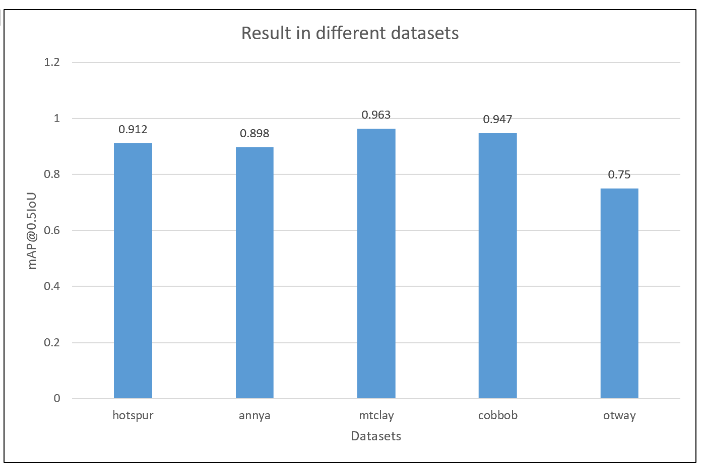
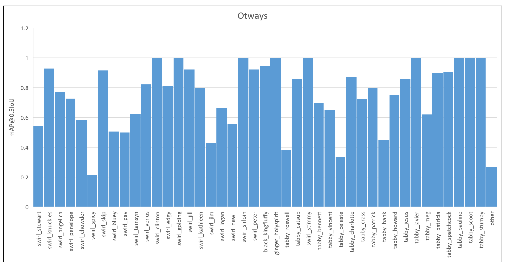
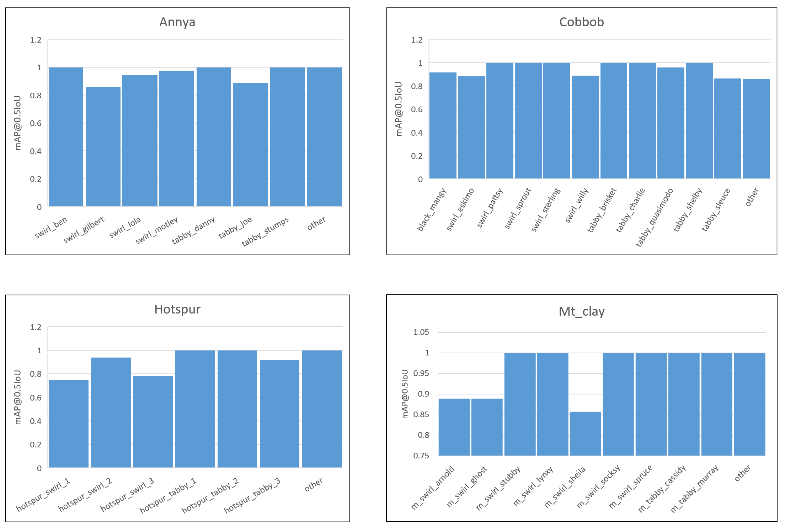

ABOUT THIS PROJECT
Australia has had more most mammal extinctions in the last 200 years, which is mainly caused by predation of
feral cats. It is important to better understand feral cat density to manage them effectively.
Since identifying individual feral car by sight is extremely time-consuming and tedious, our project aims to
build a deep leaning model to help identify individual cat automatically. We compared different obeject detection
models with the final chocie of Mask R-CNN with ImageNet pre-trained weights on Resnet-50 network
RESULTS
The training results shows below
Figure 1: The result of mAP@0.5IoU value of each dataset
Figure 2: The result of mAP@0.5IoU value of each cat in otway forest
Figure 3: The result of mAP@0.5IoU value of each cat in other four forests